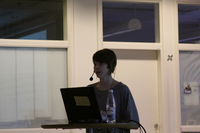

Christina Gratorp

- Biography
Christina Gratorp is an embedded C hacker and has a great interest in math, physics and feminism. You might have seen her blog Another Cyborg Manifesto, where she writes about life from a personal, but political point of view. Christina was introduced to free software not very long ago, but nowadays you can see her strolling around in a FSFE sweater, promoting the use of FOSS. This is Christinas second FSCONS as a visitor as well as a speaker.
(Photo: Christina Gratorp (http://www.flickr.com/photos/wrote/5151629508/) / Mathias Klang (http://www.flickr.com/photos/wrote/) / http://creativecommons.org/licenses/by-nc/2.0/ (http://creativecommons.org/licenses/by-nc/2.0/) )
- Blog
- http://cyborgmanifesto.blogspot.com/
My talks
- Fri 12:00 - 17:00 Workshop: Arduino workshop for women